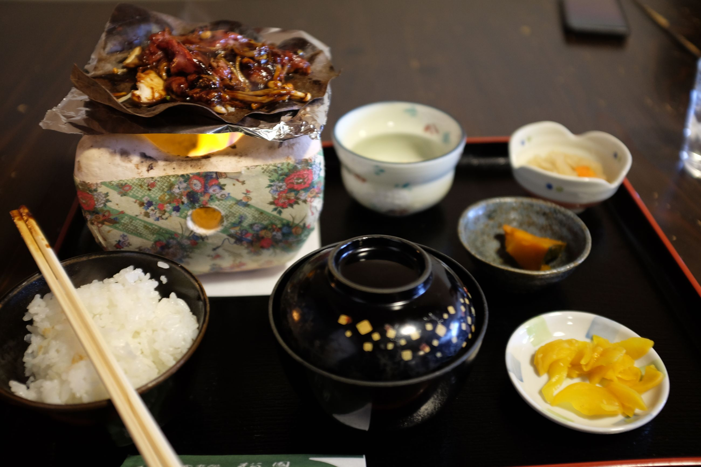
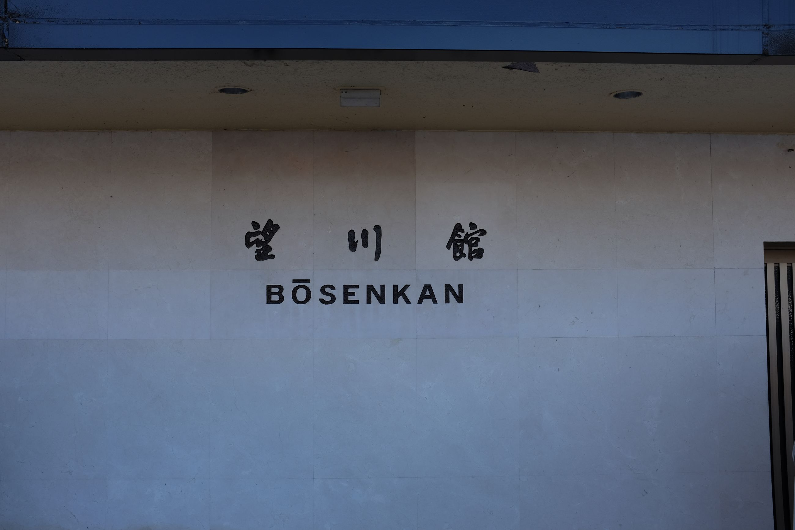
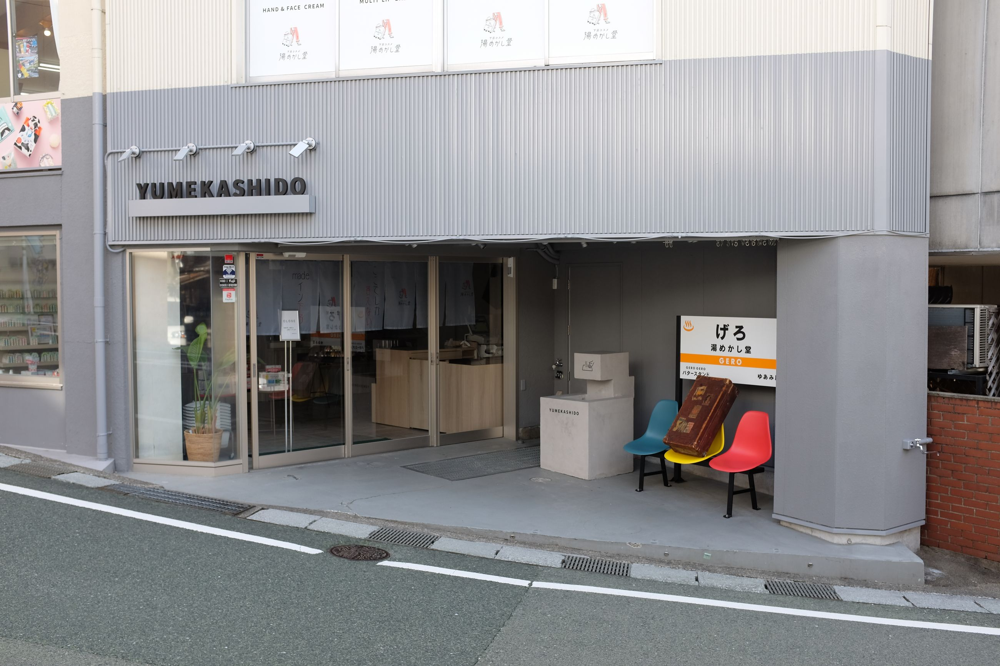
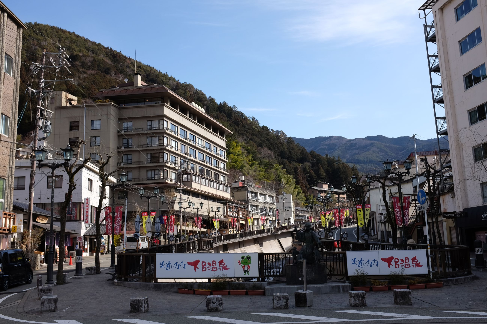
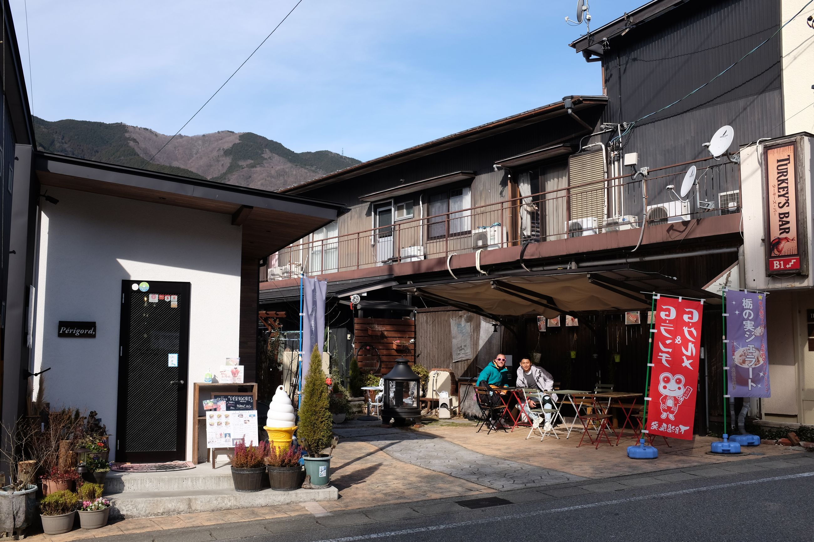
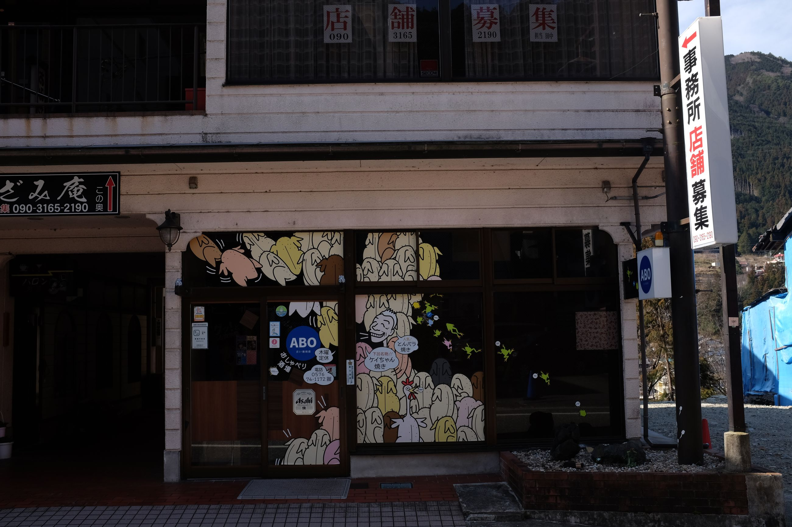
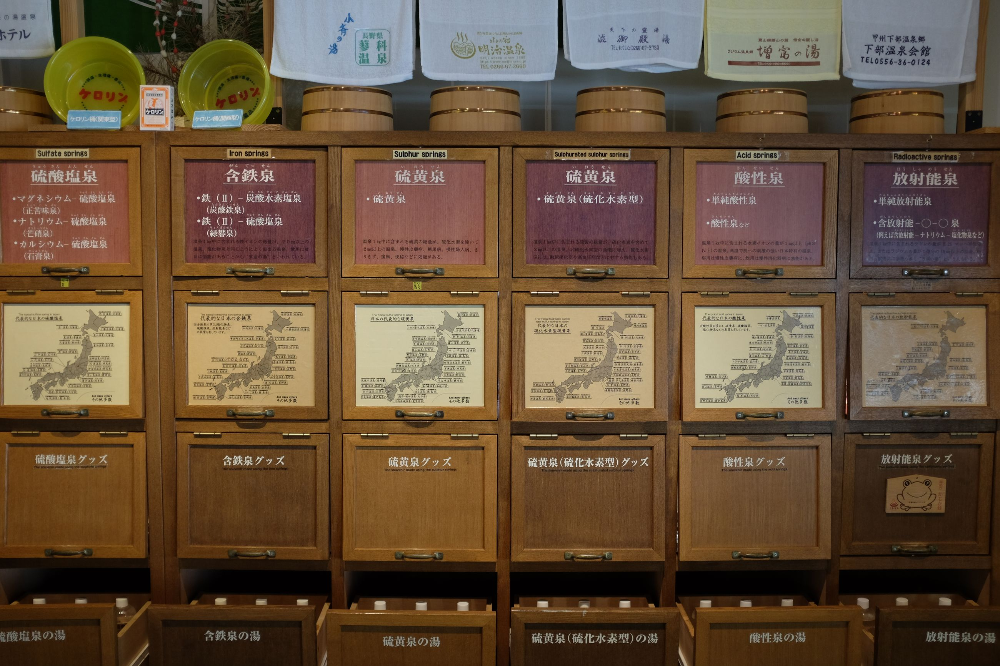
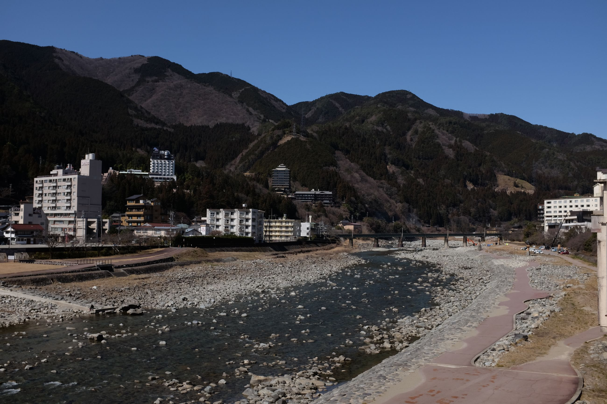

Continuing our tradition of going to onsens in the winter, we decide to go to Gero, which is known for its onsens.
The first impressions upon arriving are that it, despite being the same size as Gujo Hachiman, is noticeably more crowded. There are young people everywhere, and far more tourists. The town mostly revolves around one large street which has many shopfronts selling various things. These shopfronts are also seem open compared to those of Gujo Hachiman. We decide to drop in for a bite of Kechan once again.

We are staying in an onsens hotel, inclusive of their own baths. It again seems straight out of the 80s, in terms of its overall branding and building aesthetic. Aside from the onsens, however, there is not much else to do in this town but to shop and eat. There are a few architectural anomalies that look very Japanese (see below), so I mostly make it a photography thing.
   
One memorable meal we had here was at ABO, whose exterior contained a cartoon caricature of the boss (the man in the white hair). Long meals for dinner are the norm here, where you order some food to begin with, and then end up drinking and chatting into the night. It's enjoyable, even moreso when the owners make you feel at home. The boss was an entertaining, smiley man who kept doing weird dances and engaging with us in what English he had. Very jolly guy. Halfway through serving us, he takes a cigarette break behind the bar counter. I've never seen so many Japanese people smoke indoors, but it adds to the vibe. Strange, I can't even remember what we ate -- probably some Kechan and skewers. But, the owner definitely made it memorable.

My favourite stop in this town is the onsen museum. A quiet, meek Japanese elderly man (they all seem to have this triat) comes out and introduces -- in what he claims was his "broken" English -- the museum and the layouts to us. He is eager particularly to show us the museum's archive of onsen types, their locations, their water composition, and their pH. Japan really does not skip out on detail. Being designated an onsen requires a certain qualification, and each one is classified based on the water they contain, as well as their natural properties. Watching this eager man explain it to us, while showing us samples of the water and testing the pH with litmus paper was great. In addition, as part of the exhibit, there was a series of scientific reports done by a kid from primary school year 1 through to middle school. It was a cute personal touch. Three rooms, not a big exhibit, but one of the most memorable museums.

The entire town seems great to chill in. Bordering alongside the town, there are train tracks that run through Gero, as well as a riverbed. Along the riverbed, there are sitting out patches of grass that you can relax in. While there's not much water, you can definitely see how this town is powered by hydraulics, all the way from the river to the onsen operations in town. I'd definitely come back for a day trip.
